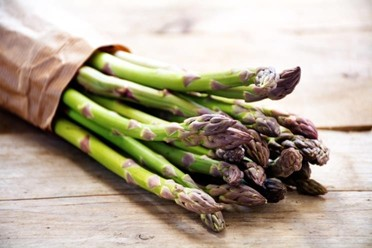
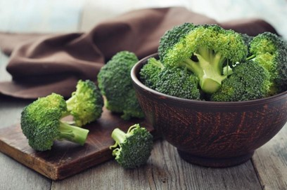
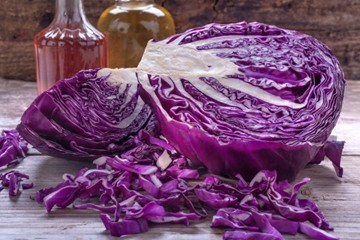
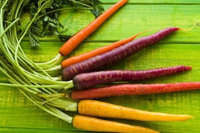
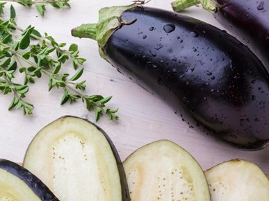
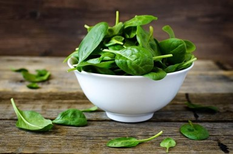

Cooking with Asparagus
Asparagus is a low-calorie source of potassium and folate and is high in antioxidants. It helps suport heart health, protects blood vessels, and helps with collagen production.
Asparagus and Apple Mixed Greens

Ingredients:
- 24 think asparagus stalks
- 1 tbsp + 1/3 cup of grape seed oil or olive oil
- 1/4 cup of rice vinegar or balsamic vinegar
- 2 tbsp of honey
- 1 clove of garlic, minced
- 10 oz of mixed baby greens
- 1 Golden Delicious apple, quartered, cored, and diced
Directions:
- Preheat your oven to 400F, and trim the ends of the asparagus stalks in preparation.
- Place the asparagus on a baking sheet, with no overlapping.
- Lightly drizzle the asparagus with 1 tbsp of the olive oil or grape seed oil, then sprinkle with salt and pepper, and rosemary.
- Roast the aparagus for 30 minutes and turn once, then remove it from the oven.
- Let the asparagus cool for 5 minutes, and then blend together the remainder of the oil, vinegar, honey, and garlic in a small bowl.
- Place the greens in a large bowl and toss it with the vinaigrette from the small bowl.
- Spoon a small amount of the salad on each of the 8 plates and top them off with the diced apples.
- Finally, arrange the asparagus nicley on top and serve chilled.
Yields: 8 servings
Cooking with Broccoli
Broccoli is very high in fiber, vitamin C, and antioxidants and it is best served roasted to preserve its nutrients.
Roasted Broccoli with Garlic and Red Pepper

Ingredients:
- 1 1/4 pounds of broccoli crowns
- 3 1/2 tbsp of olive oil, divided equally
- 2 garlic cloves, miced
- Large pinch of dried crushed red pepper
Directions:
- Preheat your oven to 450F and cut the broccoli into florets, making about 8 cups.
- Toss the broccoli and 3 tbsp of olive oil in a large bowl until they are well-coated.
- Season with salt and pepper and transfer to a rimmed baking sheet.
- Roast the broccoli for 15 minutes and mix the remaining olive oil with the garlic and red pepper in a small bowl.
- Drizzle the garlic mixture over the broccoli and give it a toss to spread the mixture evenly.
- Roast the broccoli for an additional 8 minutes until it begins to brown.
- Season again with salt and pepper and serve while still hot.
Yields: 4-6 servings
Cooking with Butternut Squash
Butternut Squash is a great source of vitamin C, A, and E, fiber, manganese, and magnesium. It is a versitle fruit that can be roasted to make soups.
Farmhouse Butternut Squash Soup

Ingredients:
- 4 pieces of real or soy bacon
- 4 large garlic cloves, chopped
- 2 large shallots
- 1 tsp of caraway seeds
- 2 pounds of butternut squash, peeled, seeded, and chopped
- 1/2 pound of carrots, chopped
- 1 Granny Smith apple, peeled, cored, and chopped
- 2 tsp of ginger or 5 shredded pieces of dry ginger
- 1 tsp of cinnamon or 2 springs of cinnamon
- 3 thyme sprigs
- 1 California bay leaf
- 3 1/2 cups of reduced-sodium chicken broth or vegetable broth
- 2 cups of water
- 1 to 1 1/2 tsp of apple cider vinegar
Directions:
- Cook the bacon until crispy, then place on paper towels to drain the grease.
- Lightly sauté the garlic and shallots in olive oil and set aside.
- Place the squash, apple, thyme, bay leaves, ginger, cinnamon, broth, and water in a large pot and boil, uncovered, until the vegetables are tender, for about 20 minutes. Add the sautéed garlic and shallots to the pot for the last 5 minutes.
- Discard the thyme and bay leaves.
- Purée the soup, in equally sized batches in a blender, until the mix is smooth - be sure to take special care when blending hot liquids.
- Return the purée to the large pot and season with salt, pepper, and apple cider vinegar. Serve with the crumbled bacon.
Yields: 6-8 servings
Cooking with Cabbage
Cabbage is low in calories and rich in vitamin C and anti-inflammatory compounds. It is used to make coleslaw or put in salads.
Lady's Cabbage

Ingredients:
- 1 head of white cabbage
- 3 tbsp of milk or cream
- 2 eggs
- 1 tbsp of butter
- Salt and pepper to taste
Directions:
- Boil the cabbage for 15 minutes until tender, then drain and set aside until cold.
- Chop the cabbage fine and add the 2 beaten eggs, tbsp of butter, pepper, salt, and the milk or cream.
- Stir well together and bake in a buttered pudding-dish until brown. Serve hot.
Yields: 4 servings
Cooking with Carrots
Carrots are rich in b-carotene, vitamin A, and become very nutritious when cooked or served raw.
Cider-Glazed Spiced Carrots

Ingredients:
- 2 pounds of medium sized carrots (about 12), peeled
- 1 cup of unfiltered apple cider
- 1/2 cup of water
- 2 tbsp of unsalted butter, cut into bits (or margarine to make the recipe vegan)
- 1 tbsp of apple cider vinegar, or to taste
- 1 tsp of cinnamon
- 1 tsp of nutmeg
- 1 tsp of cardamom
Directions:
- Cut out a round piece of wax paper to fit inside a 12-inch heavy skillet, then butter 1 side of wax paper.
- Cut teh carrots into the shape of a trapezoidal log.
- Add the carrots to the skillet with the cider, butter/margarine, cinnamon, nutmeg, and cardamom, and then cover with the wax paper cut-out (buttered side down).
- Let it simmer, while stirring occasionally, until most of the liquid has evaporated and the carrots are tender and glazed. Cook for about 50 minutes.
- Serve warm or chilled.
Yields: 8 servings
Cooking with Eggplant
Eggplant contains antioxidants and nutrients that protects cells from damage. This promising fruit can be challenging to prepare, but tastes great marinated.
Marinated Eggplant

Ingredients:
- 2 pounds of eggplant, peeled and cut into 3-by-1/4 inch sticks
- 3 cups of water
- 1 1/2 cups of white-wine vinegar
- 4 garlic cloves, coarsely chopped
- 1 tbsp of finely chopped oregano
- 1 1/2 cups of olive oil, divided
Directions:
- Toss the eggplant with a 1/4 cup of salt and drain in a covered colander placed in the sink, at room temperature, for about 4 hours. (Eggplant will turn brown.)
- Discard any liquid that drains into the bowl. Gently squezze handfuls of the eggplant and allow any additional liquid to drain into the colander.
- Bring the water and vinegar to a gentle boil in medium pot. Add the eggplant and boil, while occasionally stirring for about 2-3 minutes until tender.
- Drain in the colander, then set the colander over a bowl and cover the eggplant with a plate and weight (such as a large heavy can).
- Continue to drain, cover and chill for about 8-12 hours.
- Discard the liquid from the bowl. Gently squeeze handfuls of the eggplant to remove any excess liquid, and then pat dry.
- Stir together the eggplant, garlic, oregano, 1/2 tsp of pepper, and 1 cup of oil in a bowl.
- Transfer the mixture to a 1-quart jar or another container with a tight-fitting lid and add just enough olive oil to cover the eggplant.
- Let the eggplant marinate, covered and chill for at least 4 hours.
- Serve with crusty Italian bread, at room temperature.
Yields: 12 servings
Cooking with Spinach
Spinach is a superfood rich in vitamin A, C, E, K, and B2, minerals, and antioxidants.
Vegan Norwegian Spinach Soup

Ingredients:
- 2 pounds of fresh spinach, chopped, or 2 packages of chopped frozen spinach
- 1 1/2 quarts of hot vegetable bouillon
- 2 tbsp of flour
- 3 tbsp of margarine
- 1 tsp of salt
- 1/4 tsp of pepper
- 1/4 tsp of garlic
- 1 pound of extra-firm style tofu
Directions:
- Cook the spinach in the vegetable bouillon for 10 minutes. Drain, and keep the excess liquid to use as a stock.
- Melt the margarine and stir into the flour. When blended and smooth, add the hot liquid, a little at a time, stirring until smooth.
- Cover and simmer for 5 minutes until the broth starts to thicken up a bit.
- Add spinach, salt, pepper, and garlic, and mix thoroughly.
- Simmer covered for an additional 5 minutes.
- Serve with the firm tofu floating on top of each bowl of soup.
Yields: 4-6 servings